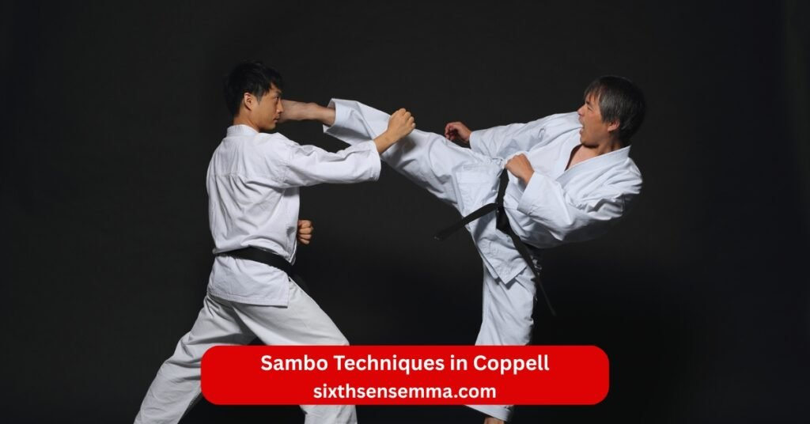
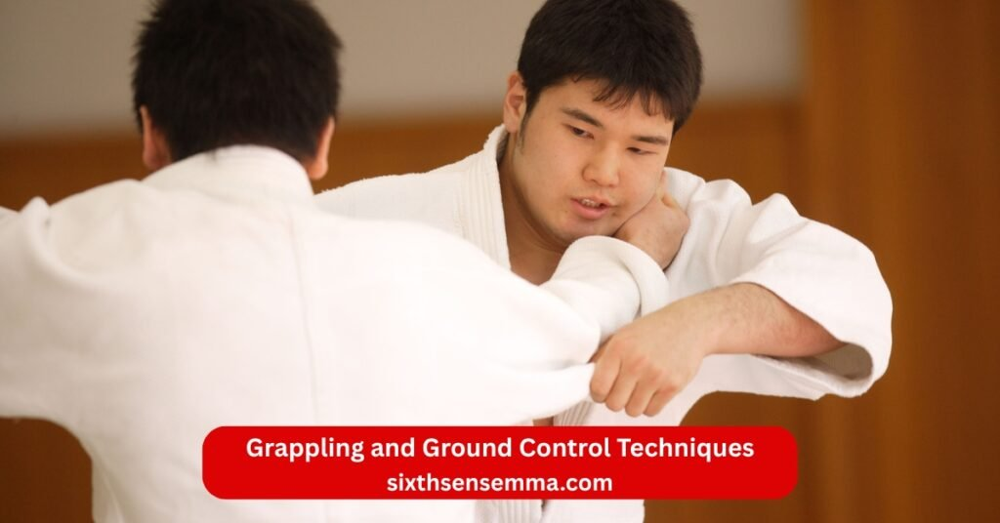
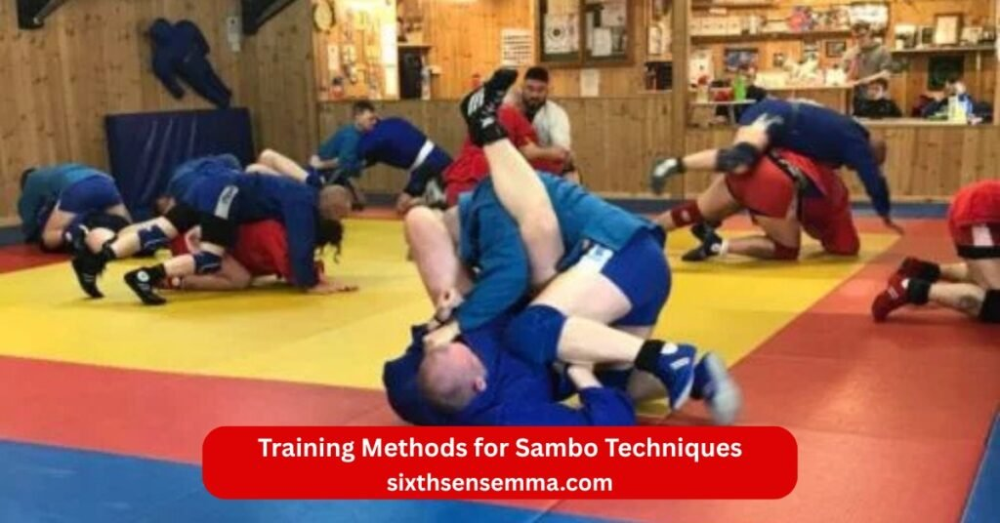

Sambo Techniques in Coppell Practical Grappling and Combat Skills with Sixth Sense MMA

Sambo Techniques in Coppell shine at Sixth Sense Martial Arts where sambo training mixes with other styles for real growth. What is sambo martial arts comes from Soviet roots as sambo is a russian way to build hand-to-hand combat skills. Sambo is a russian martial that pulls from judo wrestling and more making it versatile. Sambo roots trace to military needs but sambo today fits gyms like ours in tx. Sambo stands for self-defense without weapons and sambo includes ground work plus stands. Sambo blends global moves into one system. Benefits of learning sambo include fitness and focus. Sambo martial fans find classes here build sambo skills. Sambo world hosts events but local spots like sixth sense mma make sambo easy to start.
Types of Sambo Techniques
Types of sambo split into main branches each with unique rules and focus for different goals. Sambo martial art covers sport sambo for comps and combat sambo for fights. Kind of sambo like freestyle sambo adds wrestling twists. Styles of sambo vary but all teach practical techniques. Type of sambo picks depend on if you want sport or street use. Sambo skills adapt to both but core stays throws and subs. Sambo emphasizes control over foes. Sambo uses body leverage for wins. Sambo techniques draw from many sources.
Sport Sambo Techniques
Sport sambo focuses on throws pins and subs without strikes for safe matches. Sport sambo emphasizes jacket grips and leg attacks to score points. Sport sambo bans punches so grapples rule the mat. Amateur sambo often follows this for youth and hobby folks. Sport sambo and combat sambo differ in hits but share throws. Sambo sport crowns winners at sambo championships. Sambo events like those from world combat sambo federation highlight clean skills. Sambo championships crown top grapplers each year. Official combat sport status makes it global.
Combat Sambo Techniques
Combat sambo adds strikes like punches kicks and elbows for full fights. Combat sambo techniques mix ground pounds with throws for total dominance. Combat sambo adds punches knees and more to mimic real scraps. Combat sambo includes head protection for safety in drills. Combat sambo allows chokes and joints too. Combat sambo mixes striking with grapples. Combat sambo stands as tough for mma. Striking techniques in combat sambo build fast hands. Combat sambo blends all tools. Combat sambo competitions test full range. Tagged combat sambo often means gear up. Makes combat sambo ideal for pros. Combat sambo for hand-to-hand combat shines in defense.
Differences Between Sport and Combat Sambo
Sport sambo skips strikes while combat sambo welcomes them for raw edge. Combat sambo and sport sambo share throws but hits change the game. Freestyle sambo allows some wrestling not in others. Sambo allows leg locks in most but rules vary. Differences lie in gear and points too. Introduced by the american sambo changes like in american sambo association add local twists. American sambo association in 2004 helped spread it west. World combat sambo federation runs global rules.
Throwing Techniques in Sambo
Throwing techniques form the heart of sambo pulling from judo and wrestling for quick takedowns. Sambo throws use hips legs and shoulders to flip foes. Techniques from judo show in many but sambo adds Russian spins. Sambo techniques list covers dozens for all ranges. Sambo moves like sweeps flow natural in fights. Moves sambo martial art teach leverage over strength. Combat techniques tie throws to strikes. Sambo skills build from basics to chains. Sambo skills grow with reps. Mastering sambo needs throw drills daily.
Hip Throws and Body Rotation
Hip throws in sambo twist the body to launch opponents over the side. Body rotation adds power pulling them off balance fast. Sambo fighters learn these for close range control. Sambo fighters drill hips daily for smooth flow. Sambo fighting techniques often start here. Sambo fighting uses them to set subs.
Leg Sweeps and Trips
Leg sweeps hook feet to drop foes while trips block steps for falls. Sambo basics include these for low risk downs. Sambo exercises repeat sweeps for timing. Sambo training drills build leg speed and aim. Sambo trening means practice these often. Sambo training builds strong bases to avoid counters.
Shoulder Throws and Lifting Techniques
Shoulder throws in sambo load the opponent across the back or shoulder for high amplitude flips that disrupt balance fast. Lifting techniques raise foes off the ground using strong leg drive and grip to set up slams or direct downs. Sambo fighters favor these for explosive entries in hand-to-hand combat. Sambo training drills shoulder wheels and fireman carries to build power and timing. Throwing techniques like these score big in sport sambo and end fights quick in combat sambo.

Grappling and Ground Control Techniques
Grappling forms a major part of sambo once the fight hits the mat with focus on control and finishes. Sambo techniques blend wrestling holds with judo pins for total dominance. Sambo training builds seamless stand to ground flow using practical techniques. Ground control keeps foes stuck while setting attacks. Sambo skills shine here for real self defense scenarios.
Pins and Positional Control
Pins in sambo hold opponents flat or side for points or subs in sport sambo. Positional control rides chest or back to limit escapes and tire them out. Sambo fighters drill cross body and north south for solid pressure. Combat techniques add strikes from pins in combat sambo. Sambo emphasizes heavy top game to drain energy fast.
Transitions and Scramble Techniques
Transitions let sambo players switch positions quick during chaotic scrambles to gain advantage. Scramble techniques explode from bad spots back to top or neutral using hips and frames. Sambo training drills focus on fast rolls and granby moves for recovery. Sambo fighters learn to turn defense into offense in wild exchanges. Sambo skills grow sharp from live scramble reps.
Maintaining Top Dominance
Maintaining top dominance uses posture weight and grips to stay heavy and active on top. Sambo teaches low center and wide base to block rolls or sweeps. Sambo fighters chain pins to attacks keeping pressure constant. Combat sambo adds short strikes to break spirit while holding. Hand-to-hand combat abilities rely on this control for safe wins.
Submission Techniques in Sambo
Submission techniques end matches clean in sambo with joints or chokes from many angles. Sambo techniques list highlights legs as prime targets unlike some arts. Sambo allows aggressive subs in rules for fast finishes. Mastering sambo needs clean entry and finish control. Sambo combat blends subs with strikes for full threat.
Leg Locks as a Signature of Sambo
Leg locks stand as the hallmark of sambo with early focus on heels and knees for control. Sambo allows leg attacks from stand or ground making it unique. Sambo fighters chain throws direct to legs for surprise wins. Combat sambo keeps them sharp with added strikes. Sambo teaches safe entry to avoid counters.
Ankle Locks and Knee Locks
Ankle locks twist heels inward for straight foot pain while knee locks bar or compress joints. Sambo classics include figure four and toe holds for tight control. Sambo training stresses grip and hip push for power. Combat sambo mixes striking to open these subs. Sambo techniques make legs vulnerable fast.
Safety and Control During Submissions
Safety comes first with taps and coach watch during submission drills at our gym. Control means slow squeeze and clear signals to avoid injury. Sambo training teaches when to release for partner health. Sambo skills include knowing limits in live rolls. Practicing sambo safe builds trust and long term growth.
Combat Sambo Striking Techniques
Combat sambo stands out with added strikes that make it close to real fights. Striking techniques in combat sambo pull from boxing karate and more for full stand up threat. Combat sambo adds punches kicks and elbows to the grapple base. Combat sambo mixes striking smooth with throws for surprise edges. Sambo fighters in this style hit hard while ready to clinch or down foes.
Punches and Elbow Techniques
Punches in combat sambo come straight cross hook or uppercut for quick head or body shots. Elbow techniques slice close with horizontal vertical or spinning cuts for power in tight spots. Sambo fighters drill short sharp elbows from clinch to open paths. Hand-to-hand combat relies on these for fast stops when grabs fail. Combat techniques blend punches to set throws.
Kicks and Knee Strikes
Kicks target low mid or high with round teeps or shin blocks for distance control. Knee strikes drive up or sideways in clinch to hurt ribs or head. Sambo training builds shin toughness for hard checks and returns. Combat sambo includes knees from double leg lifts too. Striking techniques like these weaken legs for easier takedowns.
Combining Striking With Grappling
Combining striking with grappling means hit to off balance then throw or pull guard. Sambo fighters learn punch entry to hip toss or knee to clinch sweep. Combat sambo blends strikes as setup for sambo throws or subs. Hand-to-hand combat skills grow when strikes hide grapple intent. Sambo skills flow stand to ground with hits throughout.

Training Methods for Sambo Techniques
Training methods for sambo techniques mix hard work drills and live work for full growth. Sambo training at our gym pushes body and timing step by step. Sambo training drills repeat basics to chains for instinct. Practicing sambo daily builds the needed reps. Sambo trening means consistent effort.
Conditioning and Strength Development
Heavy bag shadow and circuit runs raise heart and muscle power. Conditioning includes sled pushes and core holds for throw strength. Strength development uses lifts like squats deads and pulls for base. Sambo training builds tough body able to explode late in rolls. Combat sport demands this endurance.
Drills for Speed and Explosiveness
Shadow throws pad bursts and plyo jumps sharpen quick bursts. Drills focus on fast entries and exits for reaction wins. Speed comes from light reps with perfect form then add power. Explosiveness grows from med ball slams and band resists. Sambo fighters drill these for first move edges.
Partner Training and Live Sparring
Partner holds flow rolls and positional spars build real feel. Partner training teaches adjust to live resist safe. Live sparring tests all sambo techniques under pressure with rules. Sambo training adds rounds mixing stand ground and strikes. Sambo skills grow fastest when partners push smart.
Benefits of Learning Sambo Techniques with Sixth Sense
Learning sambo at Sixth Sense Martial Arts . Benefits of learning sambo cover body control and calm in chaos. Sambo techniques in Coppell fit all levels at sixth sense mma. Choose sixth sense mma for expert martial arts training in this Russian martial art.
Practical Self-Defense Skills
Sambo teaches quick ends with throws strikes or locks for street threats. Practical self-defense skills work against bigger or armed foes using leverage. Self defense drills test real resist for confidence. Hand-to-hand combat abilities rise fast with sambo mix. Combat skills adapt to uneven odds.
Improved Balance and Body Control
Throws and rolls demand strong center and quick adjusts. Improved balance comes from low stances and sweep counters. Body control sharpens awareness of weight and limbs in motion. Sambo training hones this for falls or pushes without lose ground. Sambo skills make movement smooth under stress.
Enhanced Strength and Endurance
Hard grapples and conditioning raise full body power and lasting energy. Enhanced strength supports lifts slams and long holds. Endurance grows from rounds that mix high effort phases. Sambo training builds tough lungs for extended fights. Combat sport level fitness follows steady work.
Effective Skills for MMA and Grappling
Sambo feeds direct to mixed martial arts with throws leg locks and clinch strikes. Effective skills cross to cages for stand or ground wins. Grappling edges come from aggressive top and sub chains. Sambo mma blends shine in pros who train it. Combat sambo preps full range for modern fights.
Who Should Learn Sambo Techniques
Sambo Techniques in Coppell fit a wide range of people looking for strong martial arts training at Sixth Sense Martial Arts. Sambo offers practical techniques that build combat skills fast and effective. Learn sambo here for real world tools from this Russian martial art. Sambo training adapts to goals from fun to pro levels.
Beginners Interested in Grappling
New starters find sambo welcoming with basics like grips and simple throws first. Beginners build sambo skills slow without need for prior experience. Grappling focus teaches control and falls safe from day one. Sambo basics grow confidence quick for fresh faces.
Martial Artists and MMA Fighters
Those from judo wrestling or other styles add sambo for new edges. Martial artists gain leg locks and explosive throws missing elsewhere. MMA fighters use combat sambo strikes and chains for cage wins. Mixed martial arts pros sharpen full game here.
Self-Defense Enthusiasts
People wanting real protection pick sambo for self defense against grabs or strikes. Self-defense enthusiasts drill quick ends in uneven spots. Hand-to-hand combat tools work on streets with no rules. Sambo self defense preps calm reaction under threat.
Why Choose Sixth Sense for Sambo Techniques Training in Coppell,TX
Sixth Sense Martial Arts delivers top Sambo Techniques in Coppell with focus on true growth. Choose sixth sense mma for sambo training that blends old roots with safe modern ways. Location in Coppell tx serves easy for locals. Sixth sense mma builds sambo fighter paths step by step.
Experienced Coaches Specialized in Sambo Techniques
Coaches carry deep background in sambo throws subs and strikes. Experienced guidance spots fixes and pushes right progress. Specialized in sambo techniques means accurate form and timing tips. Sambo fighters under them gain pro level details.
Structured Training System Focused on Real Skills
Classes follow clear plans from basics to advanced chains. Structured training system builds real skills that work in rolls or fights. Focus on practical techniques skips fluff for usable tools fast. Sambo training maps growth visible each month.
Safe and Controlled Environment for Sambo Practice
Gear mats and rules keep hard work injury low. Safe rounds let push limits with trust in partners. Controlled environment adjusts intensity per level and day. Sambo practice stays fun and steady long term.
Personalized Guidance for Beginners and Advanced Students
Each member gets tweaks to match current sambo skills. Personalized guidance speeds fixes for new or seasoned alike. Beginners get extra basics while advanced students refine chains. Sambo training fits personal pace perfect.
Proven Results in Grappling and Combat Sports
Many students win at sambo championships or sambo events. Proven results show in comp medals and teaching roles later. Grappling edges help in mma bouts too. Combat sports success stories motivate all.
Contact US
Start Sambo Techniques in Coppell today at Sixth Sense Martial Arts. Visit 817 S MacArthur Blvd #100 Coppell TX 75019. Call (469) 972-7800 or email info@sixthsensemma.com. Join and build your sambo fighter skills now.
- Phone 469 972 7800
- Email: info@sixthsensemma.com
- Location: 817 S MacArthur Blvd #100 Coppell TX 75019 United States
Conclusion
Sambo Techniques in Coppell open strong paths for growth at our gym. Sixth Sense Martial Arts teaches sambo with care and real focus. Gains in control power and calm last beyond the mat. Step in and start your hand-to-hand combat journey here.
Follow Us on Social Media
Stay connected with Sixth Sense MMA through our social media channels. Follow us for class updates, training tips, and a closer look at our self defense community.
FAQ’s
Sambo does not have a fixed, official number of techniques like some martial arts (e.g., Judo’s codified throws). It draws from various styles including Judo, wrestling, and folk systems, with an emphasis on practical effectiveness. Informal lists from practitioners and books often mention 50-60 core techniques, focusing on throws, takedowns, leg locks, arm locks, pins, and (in Combat Sambo) strikes. The repertoire is vast and adaptable, without strict standardization.
Neither Sambo nor Brazilian Jiu-Jitsu (BJJ) is objectively “better” it depends on context. Sport Sambo emphasizes explosive takedowns and leg locks, making it strong for standing transitions. BJJ excels in prolonged ground fighting and submissions. Combat Sambo adds strikes, giving an edge in no-rules scenarios or MMA. Many experts view them as complementary; top fighters like Khabib Nurmagomedov blend both effectively.
The hardest fighting style is subjective, but Brazilian Jiu-Jitsu (BJJ) is most frequently cited due to its technical complexity, live resistance training (rolling against opponents), and long path to mastery (average 10+ years to black belt). Other contenders include MMA (combining multiple styles) and traditional Kung Fu (intricate forms and applications). Difficulty stems from mental strategy, physical demands, and slow progression.
Yes, John Wick incorporates Sambo elements. His background ties to Russian origins, and a scene in John Wick: Chapter 3 – Parabellum shows young Ruska Roma trainees practicing Sambo. Keanu Reeves trained in Sambo throws and grappling for authenticity, blending it with Judo, BJJ, and gun fu in the films’ choreography.
CIA operatives train in practical, no-nonsense systems focused on real-world scenarios rather than sport. Primary styles include Krav Maga (for aggressive neutralization and weapons defense), along with elements of Brazilian Jiu-Jitsu, tactical shooting, and improvised combat. Training emphasizes quick threat elimination over traditional forms.
Speed varies by practitioner, but styles known for rapid execution include Wing Chun (close-range chain punches and economy of motion), Boxing (quick hand speed and footwork), and Taekwondo (explosive kicks). Olympic fencing or Kali (Filipino stick/knife fighting) often rank highest for pure weapon speed. No single style is universally “fastest.”
Keanu Reeves trains in a mix for his roles: Judo, Brazilian Jiu-Jitsu, Sambo, Kung Fu (for The Matrix), and tactical gun work (“gun fu”) for John Wick. His style emphasizes practical grappling, throws, and fluid transitions, performing most stunts himself.
The Brazilian Jiu-Jitsu (BJJ) black belt is widely considered the hardest, averaging 8–12 years (or more) of consistent training due to live sparring, technical depth, and merit-based promotion. Other tough ones include classical Kung Fu systems (decades-long) and some Judo lineages, but BJJ’s resistance-based testing sets it apart.
No, Jason Statham is not a black belt in any traditional martial art. He has extensive training in kickboxing, Wing Chun Kung Fu, karate, and holds a purple belt in Brazilian Jiu-Jitsu. His skills come from practical experience, diving background, and film choreography rather than formal belt rankings.
Train with us in Coppell
The first class is free. Shorts, a t-shirt and a water bottle. We lend the rest.
Book a free class